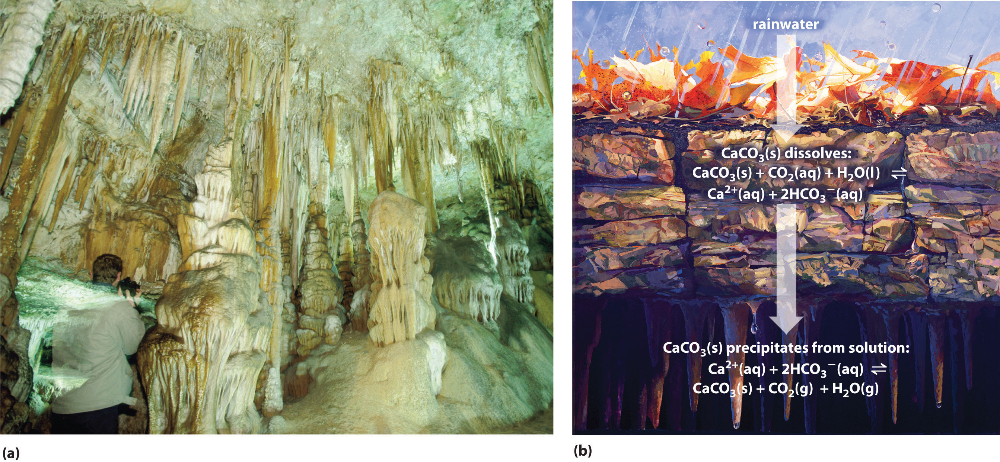
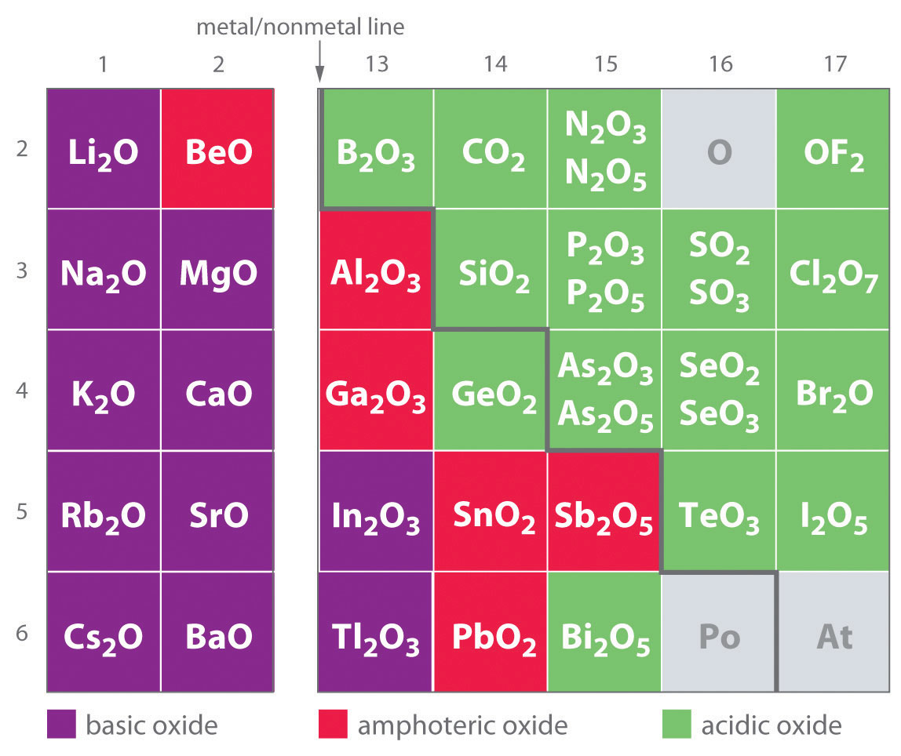

Although Chapter 16 "Aqueous Acid–Base Equilibriums" focused exclusively on acid–base equilibriums in aqueous solutions, equilibrium concepts can also be applied to many other kinds of reactions that occur in aqueous solution. In this chapter, we describe the equilibriums involved in the solubility of ionic compounds and the formation of complex ions.
Solubility equilibriums involving ionic compounds are important in fields as diverse as medicine, biology, geology, and industrial chemistry. Carefully controlled precipitation reactions of calcium salts, for example, are used by many organisms to produce structural materials, such as bone and the shells that surround mollusks and bird eggs. In contrast, uncontrolled precipitation reactions of calcium salts are partially or wholly responsible for the formation of scale in coffee makers and boilers, “bathtub rings,” and kidney stones, which can be excruciatingly painful. The principles discussed in this chapter will enable you to understand how these apparently diverse phenomena are related. Solubility equilibriums are also responsible for the formation of caves and their striking features, such as stalactites and stalagmites, through a long process involving the repeated dissolution and precipitation of calcium carbonate. In addition to all of these phenomena, by the end of this chapter you will understand why barium sulfate is ideally suited for x-ray imaging of the digestive tract, and why soluble complexes of gadolinium can be used for imaging soft tissue and blood vessels using magnetic resonance imaging (MRI), even though most simple salts of both metals are toxic to humans.

Scanning electron micrograph of kettle scale. Hard water is a solution that consists largely of calcium and magnesium carbonate in CO2-rich water. When the water is heated, CO2 gas is released, and the carbonate salts precipitate from solution and produce a solid called scale.
We begin our discussion of solubility and complexation equilibriums—those associated with the formation of complex ions—by developing quantitative methods for describing dissolution and precipitation reactions of ionic compounds in aqueous solution. Just as with acid–base equilibriums, we can describe the concentrations of ions in equilibrium with an ionic solid using an equilibrium constant expression.
When a slightly soluble ionic compound is added to water, some of it dissolves to form a solution, establishing an equilibrium between the pure solid and a solution of its ions. For the dissolution of calcium phosphate, one of the two main components of kidney stones, the equilibrium can be written as follows, with the solid salt on the left:As you will discover in Section 17.4 "Solubility and pH" and in more advanced chemistry courses, basic anions, such as S2−, PO43−, and CO32−, react with water to produce OH− and the corresponding protonated anion. Consequently, their calculated molarities, assuming no protonation in aqueous solution, are only approximate.
Equation 17.1
The equilibrium constant for the dissolution of a sparingly soluble salt is the solubility product (Ksp)The equilibrium constant expression for the dissolution of a sparingly soluble salt that includes the concentration of a pure solid, which is a constant. of the salt. Because the concentration of a pure solid such as Ca3(PO4)2 is a constant, it does not appear explicitly in the equilibrium constant expression. (For more information on the equilibrium constant expression, see Chapter 15 "Chemical Equilibrium", Section 15.2 "The Equilibrium Constant".) The equilibrium constant expression for the dissolution of calcium phosphate is therefore
Equation 17.2
At 25°C and pH 7.00, Ksp for calcium phosphate is 2.07 × 10−33, indicating that the concentrations of Ca2+ and PO43− ions in solution that are in equilibrium with solid calcium phosphate are very low. The values of Ksp for some common salts are listed in Table 17.1 "Solubility Products for Selected Ionic Substances at 25°C"; they show that the magnitude of Ksp varies dramatically for different compounds. Although Ksp is not a function of pH in Equation 17.1, changes in pH can affect the solubility of a compound, as you will discover in Section 17.4 "Solubility and pH".
As with K, the concentration of a pure solid does not appear explicitly in Ksp.
Table 17.1 Solubility Products for Selected Ionic Substances at 25°C
| Solid | Color | K sp | Solid | Color | K sp | |
|---|---|---|---|---|---|---|
| Acetates | Iodides | |||||
| Ca(O2CCH3)2·3H2O | white | 4 × 10−3 | Hg2I2* | yellow | 5.2 × 10−29 | |
| Bromides | PbI2 | yellow | 9.8 × 10−9 | |||
| AgBr | off-white | 5.35 × 10−13 | Oxalates | |||
| Hg2Br2* | yellow | 6.40 × 10−23 | Ag2C2O4 | white | 5.40 × 10−12 | |
| Carbonates | MgC2O4·2H2O | white | 4.83 × 10−6 | |||
| CaCO3 | white | 3.36 × 10−9 | PbC2O4 | white | 4.8 × 10−10 | |
| PbCO3 | white | 7.40 × 10−14 | Phosphates | |||
| Chlorides | Ag3PO4 | white | 8.89 × 10−17 | |||
| AgCl | white | 1.77 × 10−10 | Sr3(PO4)2 | white | 4.0 × 10−28 | |
| Hg2Cl2* | white | 1.43 × 10−18 | FePO4·2H2O | pink | 9.91 × 10−16 | |
| PbCl2 | white | 1.70 × 10−5 | Sulfates | |||
| Chromates | Ag2SO4 | white | 1.20 × 10−5 | |||
| CaCrO4 | yellow | 7.1 × 10−4 | BaSO4 | white | 1.08 × 10−10 | |
| PbCrO4 | yellow | 2.8 × 10−13 | PbSO4 | white | 2.53 × 10−8 | |
| Fluorides | Sulfides | |||||
| BaF2 | white | 1.84 × 10−7 | Ag2S | black | 6.3 × 10−50 | |
| PbF2 | white | 3.3 × 10−8 | CdS | yellow | 8.0 × 10−27 | |
| Hydroxides | PbS | black | 8.0 × 10−28 | |||
| Ca(OH)2 | white | 5.02 × 10−6 | ZnS | white | 1.6 × 10−24 | |
| Cu(OH)2 | pale blue | 1 × 10−14 | ||||
| Mn(OH)2 | light pink | 1.9 × 10−13 | ||||
| Cr(OH)3 | gray-green | 6.3 × 10−31 | ||||
| Fe(OH)3 | rust red | 2.79 × 10−39 | ||||
| *These contain the Hg22+ ion. | ||||||
Solubility products are determined experimentally by directly measuring either the concentration of one of the component ions or the solubility of the compound in a given amount of water. However, whereas solubility is usually expressed in terms of mass of solute per 100 mL of solvent, Ksp, like K, is defined in terms of the molar concentrations of the component ions.
Calcium oxalate monohydrate [Ca(O2CCO2)·H2O, also written as CaC2O4·H2O] is a sparingly soluble salt that is the other major component of kidney stones [along with Ca3(PO4)2]. Its solubility in water at 25°C is 7.36 × 10−4 g/100 mL. Calculate its Ksp.
Given: solubility in g/100 mL
Asked for: K sp
Strategy:
A Write the balanced dissolution equilibrium and the corresponding solubility product expression.
B Convert the solubility of the salt to moles per liter. From the balanced dissolution equilibrium, determine the equilibrium concentrations of the dissolved solute ions. Substitute these values into the solubility product expression to calculate Ksp.
Solution:
A We need to write the solubility product expression in terms of the concentrations of the component ions. For calcium oxalate monohydrate, the balanced dissolution equilibrium and the solubility product expression (abbreviating oxalate as ox2−) are as follows:
Neither solid calcium oxalate monohydrate nor water appears in the solubility product expression because their concentrations are essentially constant.
B Next we need to determine [Ca2+] and [ox2−] at equilibrium. We can use the mass of calcium oxalate monohydrate that dissolves in 100 mL of water to calculate the number of moles that dissolve in 100 mL of water. From this we can determine the number of moles that dissolve in 1.00 L of water. For dilute solutions, the density of the solution is nearly the same as that of water, so dissolving the salt in 1.00 L of water gives essentially 1.00 L of solution. Because each 1 mol of dissolved calcium oxalate monohydrate dissociates to produce 1 mol of calcium ions and 1 mol of oxalate ions, we can obtain the equilibrium concentrations that must be inserted into the solubility product expression. The number of moles of calcium oxalate monohydrate that dissolve in 100 mL of water is as follows:
The number of moles of calcium oxalate monohydrate that dissolve in 1.00 L of the saturated solution is as follows:
Because of the stoichiometry of the reaction, the concentration of Ca2+ and ox2− ions are both 5.04 × 10−5 M. Inserting these values into the solubility product expression,
In our calculation, we have ignored the reaction of the weakly basic anion with water, which tends to make the actual solubility of many salts greater than the calculated value.
Exercise
One crystalline form of calcium carbonate (CaCO3) is the mineral sold as “calcite” in mineral and gem shops. The solubility of calcite in water is 0.67 mg/100 mL. Calculate its Ksp.
Answer: 4.5 × 10−9
The reaction of weakly basic anions with H2O tends to make the actual solubility of many salts higher than predicted.

A crystal of calcite (CaCO3), illustrating the phenomenon of double refraction. When a transparent crystal of calcite is placed over a page, we see two images of the letters.
Calcite, a structural material for many organisms, is found in the teeth of sea urchins. The urchins create depressions in limestone that they can settle in by grinding the rock with their teeth. Limestone, however, also consists of calcite, so how can the urchins grind the rock without also grinding their teeth? Researchers have discovered that the teeth are shaped like needles and plates and contain magnesium. The concentration of magnesium increases toward the tip, which contributes to the hardness. Moreover, each tooth is composed of two blocks of the polycrystalline calcite matrix that are interleaved near the tip. This creates a corrugated surface that presumably increases grinding efficiency. Toolmakers are particularly interested in this approach to grinding.
Tabulated values of Ksp can also be used to estimate the solubility of a salt with a procedure that is essentially the reverse of the one used in Example 1. In this case, we treat the problem as a typical equilibrium problem and set up a table of initial concentrations, changes in concentration, and final concentrations as we did in Chapter 15 "Chemical Equilibrium", remembering that the concentration of the pure solid is essentially constant.
We saw that the Ksp for Ca3(PO4)2 is 2.07 × 10−33 at 25°C. Calculate the aqueous solubility of Ca3(PO4)2 in terms of the following:
Given: K sp
Asked for: molar concentration and mass of salt that dissolves in 100 mL of water
Strategy:
A Write the balanced equilibrium equation for the dissolution reaction and construct a table showing the concentrations of the species produced in solution. Insert the appropriate values into the solubility product expression and calculate the molar solubility at 25°C.
B Calculate the mass of solute in 100 mL of solution from the molar solubility of the salt. Assume that the volume of the solution is the same as the volume of the solvent.
Solution:
A The dissolution equilibrium for Ca3(PO4)2 (Equation 17.1) is shown in the following table. Because we are starting with distilled water, the initial concentration of both calcium and phosphate ions is zero. For every 1 mol of Ca3(PO4)2 that dissolves, 3 mol of Ca2+ and 2 mol of PO43− ions are produced in solution. If we let x equal the solubility of Ca3(PO4)2 in moles per liter, then the change in [Ca2+] will be +3x, and the change in [PO43−] will be +2x. We can insert these values into the table.
| Ca3(PO4)2 | [Ca2+] | [PO43−] | |
|---|---|---|---|
| initial | pure solid | 0 | 0 |
| change | — | +3x | +2x |
| final | pure solid | 3x | 2x |
Although the amount of solid Ca3(PO4)2 changes as some of it dissolves, its molar concentration does not change. We now insert the expressions for the equilibrium concentrations of the ions into the solubility product expression (Equation 17.2):
This is the molar solubility of calcium phosphate at 25°C. However, the molarity of the ions is 2x and 3x, which means that [PO43−] = 2.28 × 10−7 and [Ca2+] = 3.42 × 10−7.
B To find the mass of solute in 100 mL of solution, we assume that the density of this dilute solution is the same as the density of water because of the low solubility of the salt, so that 100 mL of water gives 100 mL of solution. We can then determine the amount of salt that dissolves in 100 mL of water:
Exercise
The solubility product of silver carbonate (Ag2CO3) is 8.46 × 10−12 at 25°C. Calculate the following:
Answer:
The ion product (Q)A quantity that has precisely the same form as the solubility product for the dissolution of a sparingly soluble salt, except that the concentrations used are not necessarily equilibrium concentrations. of a salt is the product of the concentrations of the ions in solution raised to the same powers as in the solubility product expression. It is analogous to the reaction quotient (Q) discussed for gaseous equilibriums in Chapter 15 "Chemical Equilibrium". Whereas Ksp describes equilibrium concentrations, the ion product describes concentrations that are not necessarily equilibrium concentrations.
The ion product Q is analogous to the reaction quotient Q for gaseous equilibriums.
As summarized in Figure 17.1 "The Relationship between ", there are three possible conditions for an aqueous solution of an ionic solid:
Figure 17.1 The Relationship between Q and Ksp

If Q is less than Ksp, the solution is unsaturated and more solid will dissolve until the system reaches equilibrium (Q = Ksp). If Q is greater than Ksp, the solution is supersaturated and solid will precipitate until Q = Ksp. If Q = Ksp, the rate of dissolution is equal to the rate of precipitation; the solution is saturated, and no net change in the amount of dissolved solid will occur.
The process of calculating the value of the ion product and comparing it with the magnitude of the solubility product is a straightforward way to determine whether a solution is unsaturated, saturated, or supersaturated. More important, the ion product tells chemists whether a precipitate will form when solutions of two soluble salts are mixed.
We mentioned that barium sulfate is used in medical imaging of the gastrointestinal tract. Its solubility product is 1.08 × 10−10 at 25°C, so it is ideally suited for this purpose because of its low solubility when a “barium milkshake” is consumed by a patient. The pathway of the sparingly soluble salt can be easily monitored by x-rays. Will barium sulfate precipitate if 10.0 mL of 0.0020 M Na2SO4 is added to 100 mL of 3.2 × 10−4 M BaCl2? Recall that NaCl is highly soluble in water.
Given: Ksp and volumes and concentrations of reactants
Asked for: whether precipitate will form
Strategy:
A Write the balanced equilibrium equation for the precipitation reaction and the expression for Ksp.
B Determine the concentrations of all ions in solution when the solutions are mixed and use them to calculate the ion product (Q).
C Compare the values of Q and Ksp to decide whether a precipitate will form.
Solution:
A The only slightly soluble salt that can be formed when these two solutions are mixed is BaSO4 because NaCl is highly soluble. The equation for the precipitation of BaSO4 is as follows:
The solubility product expression is as follows:
B To solve this problem, we must first calculate the ion product—Q = [Ba2+][SO42−]—using the concentrations of the ions that are present after the solutions are mixed and before any reaction occurs. The concentration of Ba2+ when the solutions are mixed is the total number of moles of Ba2+ in the original 100 mL of BaCl2 solution divided by the final volume (100 mL + 10.0 mL = 110 mL):
Similarly, the concentration of SO42− after mixing is the total number of moles of SO42− in the original 10.0 mL of Na2SO4 solution divided by the final volume (110 mL):
We can now calculate Q:
C We now compare Q with the Ksp. If Q > Ksp, then BaSO4 will precipitate, but if Q < Ksp, it will not. Because Q > Ksp, we predict that BaSO4 will precipitate when the two solutions are mixed. In fact, BaSO4 will continue to precipitate until the system reaches equilibrium, which occurs when [Ba2+][SO42−] = Ksp = 1.08 × 10−10.
Exercise
The solubility product of calcium fluoride (CaF2) is 3.45 × 10−11. If 2.0 mL of a 0.10 M solution of NaF is added to 128 mL of a 2.0 × 10−5 M solution of Ca(NO3)2, will CaF2 precipitate?
Answer: yes (Q = 4.7 × 10−11 > Ksp)
The solubility product expression tells us that the equilibrium concentrations of the cation and the anion are inversely related. That is, as the concentration of the anion increases, the maximum concentration of the cation needed for precipitation to occur decreases—and vice versa—so that Ksp is constant. Consequently, the solubility of an ionic compound depends on the concentrations of other salts that contain the same ions. This dependency is another example of the common ion effect discussed in Chapter 16 "Aqueous Acid–Base Equilibriums", Section 16.6 "Buffers": adding a common cation or anion shifts a solubility equilibrium in the direction predicted by Le Châtelier’s principle. As a result, the solubility of any sparingly soluble salt is almost always decreased by the presence of a soluble salt that contains a common ion.The exceptions generally involve the formation of complex ions, which is discussed in Section 17.3 "The Formation of Complex Ions".
Consider, for example, the effect of adding a soluble salt, such as CaCl2, to a saturated solution of calcium phosphate [Ca3(PO4)2]. We have seen that the solubility of Ca3(PO4)2 in water at 25°C is 1.14 × 10−7 M (Ksp = 2.07 × 10−33). Thus a saturated solution of Ca3(PO4)2 in water contains 3 × (1.14 × 10−7 M) = 3.42 × 10−7 M Ca2+ and 2 × (1.14 × 10−7 M) = 2.28 × 10−7 M PO43−, according to the stoichiometry shown in Equation 17.1 (neglecting hydrolysis to form HPO42− as described in Chapter 16 "Aqueous Acid–Base Equilibriums"). If CaCl2 is added to a saturated solution of Ca3(PO4)2, the Ca2+ ion concentration will increase such that [Ca2+] > 3.42 × 10−7 M, making Q > Ksp. The only way the system can return to equilibrium is for the reaction in Equation 17.1 to proceed to the left, resulting in precipitation of Ca3(PO4)2. This will decrease the concentration of both Ca2+ and PO43− until Q = Ksp.
The common ion effect usually decreases the solubility of a sparingly soluble salt.
Calculate the solubility of calcium phosphate [Ca3(PO4)2] in 0.20 M CaCl2.
Given: concentration of CaCl2 solution
Asked for: solubility of Ca3(PO4)2 in CaCl2 solution
Strategy:
A Write the balanced equilibrium equation for the dissolution of Ca3(PO4)2. Tabulate the concentrations of all species produced in solution.
B Substitute the appropriate values into the expression for the solubility product and calculate the solubility of Ca3(PO4)2.
Solution:
A The balanced equilibrium equation is given in the following table. If we let x equal the solubility of Ca3(PO4)2 in moles per liter, then the change in [Ca2+] is once again +3x, and the change in [PO43−] is +2x. We can insert these values into the table.
| Ca3(PO4)2 | [Ca2+] | [PO43−] | |
|---|---|---|---|
| initial | pure solid | 0.20 | 0 |
| change | — | +3x | +2x |
| final | pure solid | 0.20 + 3x | 2x |
B The Ksp expression is as follows:
Because Ca3(PO4)2 is a sparingly soluble salt, we can reasonably expect that x << 0.20. Thus (0.20 + 3x) M is approximately 0.20 M, which simplifies the Ksp expression as follows:
This value is the solubility of Ca3(PO4)2 in 0.20 M CaCl2 at 25°C. It is approximately nine orders of magnitude less than its solubility in pure water, as we would expect based on Le Châtelier’s principle. With one exception, this example is identical to Example 2—here the initial [Ca2+] was 0.20 M rather than 0.
Exercise
Calculate the solubility of silver carbonate in a 0.25 M solution of sodium carbonate. The solubility of silver carbonate in pure water is 8.45 × 10−12 at 25°C.
Answer: 2.9 × 10−6 M (versus 1.3 × 10−4 M in pure water)
The equilibrium constant for a dissolution reaction, called the solubility product (Ksp), is a measure of the solubility of a compound. Whereas solubility is usually expressed in terms of mass of solute per 100 mL of solvent, Ksp is defined in terms of the molar concentrations of the component ions. In contrast, the ion product (Q) describes concentrations that are not necessarily equilibrium concentrations. Comparing Q and Ksp enables us to determine whether a precipitate will form when solutions of two soluble salts are mixed. Adding a common cation or common anion to a solution of a sparingly soluble salt shifts the solubility equilibrium in the direction predicted by Le Châtelier’s principle. The solubility of the salt is almost always decreased by the presence of a common ion.
Write an expression for Ksp for each salt.
Some species are not represented in a solubility product expression. Why?
Describe the differences between Q and Ksp.
How can an ion product be used to determine whether a solution is saturated?
When using Ksp to directly compare the solubilities of compounds, why is it important to compare only the Ksp values of salts that have the same stoichiometry?
Describe the effect of a common ion on the solubility of a salt. Is this effect similar to the common ion effect found in buffers? Explain your answer.
Explain why the presence of MgCl2 decreases the molar solubility of the sparingly soluble salt MgCO3.
For a 1:1 salt, the molar solubility is simply for a 2:1 salt, the molar solubility is Consequently, the magnitudes of Ksp can be correlated with molar solubility only if the salts have the same stoichiometry.
Because of the common ion effect. Adding a soluble Mg2+ salt increases [Mg2+] in solution, and Le Châtelier’s principle predicts that this will shift the solubility equilibrium of MgCO3 to the left, decreasing its solubility.
Predict the molar solubility of each compound using the Ksp values given in Chapter 26 "Appendix B: Solubility-Product Constants (".
Predict the molar solubility of each compound using the Ksp values given.
A student prepared 750 mL of a saturated solution of silver sulfate (Ag2SO4). How many grams of Ag2SO4 does the solution contain? Ksp = 1.20 × 10−5.
Given the Ksp values in Table 17.1 "Solubility Products for Selected Ionic Substances at 25°C" and Chapter 26 "Appendix B: Solubility-Product Constants (", predict the molar concentration of each species in a saturated aqueous solution.
Given the Ksp values in Table 17.1 "Solubility Products for Selected Ionic Substances at 25°C" and Chapter 26 "Appendix B: Solubility-Product Constants (", predict the molar concentration of each species in a saturated aqueous solution.
Silicon dioxide, the most common binary compound of silicon and oxygen, constitutes approximately 60% of Earth’s crust. Under certain conditions, this compound can react with water to form silicic acid, which can be written as either H4SiO4 or Si(OH)4. Write a balanced chemical equation for the dissolution of SiO2 in basic solution. Write an equilibrium constant expression for the reaction.
The Ksp of Mg(OH)2 is 5.61 × 10−12. If you tried to dissolve 24.0 mg of Mg(OH)2 in 250 mL of water and then filtered the solution and dried the remaining solid, what would you predict to be the mass of the undissolved solid? You discover that only 1.0 mg remains undissolved. Explain the difference between your expected value and the actual value.
The Ksp of lithium carbonate is 8.15 × 10−4. If 2.34 g of the salt is stirred with 500 mL of water and any undissolved solid is filtered from the solution and dried, what do you predict to be the mass of the solid? You discover that all of your sample dissolves. Explain the difference between your predicted value and the actual value.
You have calculated that 24.6 mg of BaSO4 will dissolve in 1.0 L of water at 25°C. After adding your calculated amount to 1.0 L of water and stirring for several hours, you notice that the solution contains undissolved solid. After carefully filtering the solution and drying the solid, you find that 22.1 mg did not dissolve. According to your measurements, what is the Ksp of barium sulfate?
In a saturated silver chromate solution, the molar solubility of chromate is 6.54 × 10−5. What is the Ksp?
A saturated lead(II) chloride solution has a chloride concentration of 3.24 × 10−2 mol/L. What is the Ksp?
From the solubility data given, calculate Ksp for each compound.
From the solubility data given, calculate Ksp for each compound.
Given the following solubilities, calculate Ksp for each compound.
Given the following solubilities, calculate Ksp for each compound.
The Ksp of the phosphate fertilizer CaHPO4·2H2O is 2.7 × 10−7 at 25°C. What is the molar concentration of a saturated solution? What mass of this compound will dissolve in 3.0 L of water at this temperature?
The Ksp of zinc carbonate monohydrate is 5.5 × 10−11 at 25°C. What is the molar concentration of a saturated solution? What mass of this compound will dissolve in 2.0 L of water at this temperature?
Silver nitrate eye drops were formerly administered to newborn infants to guard against eye infections contracted during birth. Although silver nitrate is highly water soluble, silver sulfate has a Ksp of 1.20 × 10−5 at 25°C. If you add 25.0 mL of 0.015 M AgNO3 to 150 mL of 2.8 × 10−3 M Na2SO4, will you get a precipitate? If so, what will its mass be?
Use the data in Chapter 26 "Appendix B: Solubility-Product Constants (" to predict whether precipitation will occur when each pair of solutions is mixed.
What is the maximum volume of 0.048 M Pb(NO3)2 that can be added to 250 mL of 0.10 M NaSCN before precipitation occurs? Ksp = 2.0 × 10−5 for Pb(SCN)2.
Given 300 mL of a solution that is 0.056 M in lithium nitrate, what mass of solid sodium carbonate can be added before precipitation occurs (assuming that the volume of solution does not change after adding the solid)? Ksp = 8.15 × 10−4 for Li2CO3.
Given the information in the following table, calculate the molar solubility of each sparingly soluble salt in 0.95 M MgCl2.
| Saturated Solution | K sp |
|---|---|
| MgCO3·3H2O | 2.4 × 10−6 |
| Mg(OH)2 | 5.6 × 10−12 |
| Mg3(PO4)2 | 1.04 × 10−24 |
3.37 g
22.4 mg; a secondary reaction occurs, where OH− from the dissociation of the salt reacts with H+ from the dissociation of water. This reaction causes further dissociation of the salt (Le Châtelier’s principle).
1.2 × 10−10
1.70 × 10−5
7.4 × 10−6 M; 2.1 mg
Precipitation will occur in all cases.
8.27 g
The solubility product of an ionic compound describes the concentrations of ions in equilibrium with a solid, but what happens if some of the cations become associated with anions rather than being completely surrounded by solvent? Then predictions of the total solubility of the compound based on the assumption that the solute exists solely as discrete ions would differ substantially from the actual solubility, as would predictions of ionic concentrations. In general, four situations explain why the solubility of a compound may be other than expected: ion pair formation, the incomplete dissociation of molecular solutes, the formation of complex ions, and changes in pH. The first two situations are described in this section, the formation of complex ions is discussed in Section 17.3 "The Formation of Complex Ions", and changes in pH are discussed in Section 17.4 "Solubility and pH".
An ion pairA cation and an anion that are in intimate contact in solution rather than separated by solvent. An ion pair can be viewed as a species that is intermediate between the ionic solid and the completely dissociated ions in solution. consists of a cation and an anion that are in intimate contact in solution, rather than separated by solvent (Figure 17.2 "Ion-Pair Formation"). The ions in an ion pair are held together by the same attractive electrostatic forces that we discussed in Chapter 8 "Ionic versus Covalent Bonding" for ionic solids. As a result, the ions in an ion pair migrate as a single unit, whose net charge is the sum of the charges on the ions. In many ways, we can view an ion pair as a species intermediate between the ionic solid (in which each ion participates in many cation–anion interactions that hold the ions in a rigid array) and the completely dissociated ions in solution (where each is fully surrounded by water molecules and free to migrate independently).
Figure 17.2 Ion-Pair Formation

In an ion pair, the cation and the anion are in intimate contact in solution and migrate as a single unit. They are not completely dissociated and individually surrounded by solvent molecules, as are the hydrated ions, which are free to migrate independently.
As illustrated for calcium sulfate in the following equation, a second equilibrium must be included to describe the solubility of salts that form ion pairs:
Equation 17.3
The ion pair is represented by the symbols of the individual ions separated by a dot, which indicates that they are associated in solution. The formation of an ion pair is a dynamic process, just like any other equilibrium, so a particular ion pair may exist only briefly before dissociating into the free ions, each of which may later associate briefly with other ions.
Ion-pair formation can have a major effect on the measured solubility of a salt. For example, the measured Ksp for calcium sulfate is 4.93 × 10−5 at 25°C. The solubility of CaSO4 should be 7.02 × 10−3 M if the only equilibrium involved were as follows:
Equation 17.4
In fact, the experimentally measured solubility of calcium sulfate at 25°C is 1.6 × 10−2 M, almost twice the value predicted from its Ksp. The reason for the discrepancy is that the concentration of ion pairs in a saturated CaSO4 solution is almost as high as the concentration of the hydrated ions. Recall that the magnitude of attractive electrostatic interactions is greatest for small, highly charged ions. Hence ion pair formation is most important for salts that contain M2+ and M3+ ions, such as Ca2+ and La3+, and is relatively unimportant for salts that contain monopositive cations, except for the smallest, Li+. We therefore expect a saturated solution of CaSO4 to contain a high concentration of ion pairs and its solubility to be greater than predicted from its Ksp.
The formation of ion pairs increases the solubility of a salt.
A molecular solute may also be more soluble than predicted by the measured concentrations of ions in solution due to incomplete dissociation. This is particularly common with weak organic acids. (For more information about weak organic acids, see Chapter 16 "Aqueous Acid–Base Equilibriums"). Although strong acids (HA) dissociate completely into their constituent ions (H+ and A−) in water, weak acids such as carboxylic acids do not (Ka = 1.5 × 10−5). However, the molecular (undissociated) form of a weak acid (HA) is often quite soluble in water; for example, acetic acid (CH3CO2H) is completely miscible with water. Many carboxylic acids, however, have only limited solubility in water, such as benzoic acid (C6H5CO2H), with Ka = 6.25 × 10−5. Just as with calcium sulfate, we need to include an additional equilibrium to describe the solubility of benzoic acid:
Equation 17.5
In a case like this, measuring only the concentration of the ions grossly underestimates the total concentration of the organic acid in solution. In the case of benzoic acid, for example, the pH of a saturated solution at 25°C is 2.85, corresponding to [H+] = [C6H5CO2−] = 1.4 × 10−3 M. The total concentration of benzoic acid in the solution, however, is 2.8 × 10−2 M. Thus approximately 95% of the benzoic acid in solution is in the form of hydrated neutral molecules—C6H5CO2H(aq)—and only about 5% is present as the dissociated ions (Figure 17.3 "Incomplete Dissociation of a Molecular Solute").
Incomplete dissociation of a molecular solute that is miscible with water can increase the solubility of the solute.
Figure 17.3 Incomplete Dissociation of a Molecular Solute

In a saturated solution of benzoic acid in water at 25°C, only about 5% of the dissolved benzoic acid molecules are dissociated to form benzoate anions and hydrated protons. The remaining 95% exists in solution in the form of hydrated neutral molecules. (H2O molecules are omitted for clarity.)
Although ion pairs, such as Ca2+·SO42−, and undissociated electrolytes, such as C6H5CO2H, are both electrically neutral, there is a major difference in the forces responsible for their formation. Simple electrostatic attractive forces between the cation and the anion hold the ion pair together, whereas a polar covalent O−H bond holds together the undissociated electrolyte.
There are four explanations why the solubility of a compound can differ from the solubility indicated by the concentrations of ions: (1) ion pair formation, in which an anion and a cation are in intimate contact in solution and not separated by solvent, (2) the incomplete dissociation of molecular solutes, (3) the formation of complex ions, and (4) changes in pH. An ion pair is held together by electrostatic attractive forces between the cation and the anion, whereas incomplete dissociation results from intramolecular forces, such as polar covalent O–H bonds.
Do you expect the actual molar solubility of LaPO4 to be greater than, the same as, or less than the value calculated from its Ksp? Explain your reasoning.
Do you expect the difference between the calculated molar solubility and the actual molar solubility of Ca3(PO4)2 to be greater than or less than the difference in the solubilities of Mg3(PO4)2? Why?
Write chemical equations to describe the interactions in a solution that contains Mg(OH)2, which forms ion pairs, and in one that contains propanoic acid (CH3CH2CO2H), which forms a hydrated neutral molecule.
Draw representations of Ca(IO3)2 in solution
Ferric phosphate has a molar solubility of 5.44 × 10−16 in 1.82 M Na3PO4. Predict its Ksp. The actual Ksp is 1.3 × 10−22. Explain this discrepancy.
9.90 × 10−16; the solubility is much higher than predicted by Ksp due to the formation of ion pairs (and/or phosphate complexes) in the sodium phosphate solution.
In Chapter 4 "Reactions in Aqueous Solution", you learned that metal ions in aqueous solution are hydrated—that is, surrounded by a shell of usually four or six water molecules. A hydrated ion is one kind of a complex ionAn ionic species that forms between a central metal ion and one or more surrounding ligands because of a Lewis acid–base interaction. The positively charged metal ion acts as the Lewis acid, and the ligand acts as the Lewis base. (or, simply, complex), a species formed between a central metal ion and one or more surrounding ligandsAn ion or a molecule that contains one or more pairs of electrons that can be shared with the central metal in a metal complex., molecules or ions that contain at least one lone pair of electrons, such as the [Al(H2O)6]3+ ion in Figure 16.12 "Effect of a Metal Ion on the Acidity of Water".
A complex ion forms from a metal ion and a ligand because of a Lewis acid–base interaction. The positively charged metal ion acts as a Lewis acid, and the ligand, with one or more lone pairs of electrons, acts as a Lewis base. Small, highly charged metal ions, such as Cu2+ or Ru3+, have the greatest tendency to act as Lewis acids, and consequently, they have the greatest tendency to form complex ions.
As an example of the formation of complex ions, consider the addition of ammonia to an aqueous solution of the hydrated Cu2+ ion {[Cu(H2O)6]2+}. Because it is a stronger base than H2O, ammonia replaces the water molecules in the hydrated ion to form the [Cu(NH3)4(H2O)2]2+ ion. Formation of the [Cu(NH3)4(H2O)2]2+ complex is accompanied by a dramatic color change, as shown in Figure 17.4 "The Formation of Complex Ions". The solution changes from the light blue of [Cu(H2O)6]2+ to the blue-violet characteristic of the [Cu(NH3)4(H2O)2]2+ ion.
Figure 17.4 The Formation of Complex Ions

An aqueous solution of CuSO4 consists of hydrated Cu2+ ions in the form of pale blue [Cu(H2O)6]2+ (left). The addition of aqueous ammonia to the solution results in the formation of the intensely blue-violet [Cu(NH3)4(H2O)2]2+ ions, usually written as [Cu(NH3)4]2+ ion (right) because ammonia, a stronger base than H2O, replaces water molecules from the hydrated Cu2+ ion.
The replacement of water molecules from [Cu(H2O)6]2+ by ammonia occurs in sequential steps. Omitting the water molecules bound to Cu2+ for simplicity, we can write the equilibrium reactions as follows:
Equation 17.6
The sum of the stepwise reactions is the overall equation for the formation of the complex ion:The hydrated Cu2+ ion contains six H2O ligands, but the complex ion that is produced contains only four NH3 ligands, not six. The reasons for this apparently unusual behavior will be discussed in Chapter 23 "The ".
Equation 17.7
The equilibrium constant for the formation of the complex ion from the hydrated ion is called the formation constant (Kf)The equilibrium constant for the formation of a complex ion from a hydrated metal ion; that is, for the reaction . The equilibrium constant expression for Kf has the same general form as any other equilibrium constant expression. In this case, the expression is as follows:
Equation 17.8
The formation constant (Kf) has the same general form as any other equilibrium constant expression.
Water, a pure liquid, does not appear explicitly in the equilibrium constant expression, and the hydrated Cu2+(aq) ion is represented as Cu2+ for simplicity. As for any equilibrium, the larger the value of the equilibrium constant (in this case, Kf), the more stable the product. With Kf = 2.1 × 1013, the [Cu(NH3)4(H2O)2]2+ complex ion is very stable. The formation constants for some common complex ions are listed in Table 17.2 "Formation Constants for Selected Complex Ions in Aqueous Solution*".
Table 17.2 Formation Constants for Selected Complex Ions in Aqueous Solution*
| Complex Ion | Equilibrium Equation | K f | |
|---|---|---|---|
| Ammonia Complexes | [Ag(NH3)2]+ | 1.1 × 107 | |
| [Cu(NH3)4]2+ | 2.1 × 1013 | ||
| [Ni(NH3)6]2+ | 5.5 × 108 | ||
| Cyanide Complexes | [Ag(CN)2]− | 1.1 × 1018 | |
| [Ni(CN)4]2− | 2.2 × 1031 | ||
| [Fe(CN)6]3− | 1 × 1042 | ||
| Hydroxide Complexes | [Zn(OH)4]2− | 4.6 × 1017 | |
| [Cr(OH)4]− | 8.0 × 1029 | ||
| Halide Complexes | [HgCl4]2− | 1.2 × 1015 | |
| [CdI4]2− | 2.6 × 105 | ||
| [AlF6]3− | 6.9 × 1019 | ||
| Other Complexes | [Ag(S2O3)2]3− | 2.9 × 1013 | |
| [Fe(C2O4)3]3− | 2.0 × 1020 | ||
| *Reported values are overall formation constants. | |||
Source: Data from Lange’s Handbook of Chemistry, 15th ed. (1999).
If 12.5 g of Cu(NO3)2·6H2O is added to 500 mL of 1.00 M aqueous ammonia, what is the equilibrium concentration of Cu2+(aq)?
Given: mass of Cu2+ salt and volume and concentration of ammonia solution
Asked for: equilibrium concentration of Cu2+(aq)
Strategy:
A Calculate the initial concentration of Cu2+ due to the addition of copper(II) nitrate hexahydrate. Use the stoichiometry of the reaction shown in Equation 17.7 to construct a table showing the initial concentrations, the changes in concentrations, and the final concentrations of all species in solution.
B Substitute the final concentrations into the expression for the formation constant (Equation 17.8) to calculate the equilibrium concentration of Cu2+(aq).
Solution:
Adding an ionic compound that contains Cu2+ to an aqueous ammonia solution will result in the formation of [Cu(NH3)4]2+(aq), as shown in Equation 17.7. We assume that the volume change caused by adding solid copper(II) nitrate to aqueous ammonia is negligible.
A The initial concentration of Cu2+ from the amount of added copper nitrate prior to any reaction is as follows:
Because the stoichiometry of the reaction is four NH3 to one Cu2+, the amount of NH3 required to react completely with the Cu2+ is 4(0.0846) = 0.338 M. The concentration of ammonia after complete reaction is 1.00 M − 0.338 M = 0.66 M. These results are summarized in the first two lines of the following table. Because the equilibrium constant for the reaction is large (2.1 × 1013), the equilibrium will lie far to the right. Thus we will assume that the formation of [Cu(NH3)4]2+ in the first step is complete and allow some of it to dissociate into Cu2+ and NH3 until equilibrium has been reached. If we define x as the amount of Cu2+ produced by the dissociation reaction, then the stoichiometry of the reaction tells us that the change in the concentration of [Cu(NH3)4]2+ is −x, and the change in the concentration of ammonia is +4x, as indicated in the table. The final concentrations of all species (in the bottom row of the table) are the sums of the concentrations after complete reaction and the changes in concentrations.
| [Cu2+] | [NH3] | [[Cu(NH3)4]2+] | |
|---|---|---|---|
| initial | 0.0846 | 1.00 | 0 |
| after complete reaction | 0 | 0.66 | 0.0846 |
| change | +x | +4x | −x |
| final | x | 0.66 + 4x | 0.0846 − x |
B Substituting the final concentrations into the expression for the formation constant (Equation 17.8) and assuming that x << 0.0846, which allows us to remove x from the sum and difference,
The value of x indicates that our assumption was justified. The equilibrium concentration of Cu2+(aq) in a 1.00 M ammonia solution is therefore 2.1 × 10−14 M.
Exercise
The ferrocyanide ion {[Fe(CN)6]4−} is very stable, with a Kf of 1 × 1035. Calculate the concentration of cyanide ion in equilibrium with a 0.65 M solution of K4[Fe(CN)6].
Answer: 2 × 10−6 M
What happens to the solubility of a sparingly soluble salt if a ligand that forms a stable complex ion is added to the solution? One such example occurs in conventional black-and-white photography, which was discussed briefly in Chapter 4 "Reactions in Aqueous Solution".
Recall that black-and-white photographic film contains light-sensitive microcrystals of AgBr, or mixtures of AgBr and other silver halides. AgBr is a sparingly soluble salt, with a Ksp of 5.35 × 10−13 at 25°C. When the shutter of the camera opens, the light from the object being photographed strikes some of the crystals on the film and initiates a photochemical reaction that converts AgBr to black Ag metal. Well-formed, stable negative images appear in tones of gray, corresponding to the number of grains of AgBr converted, with the areas exposed to the most light being darkest. To fix the image and prevent more AgBr crystals from being converted to Ag metal during processing of the film, the unreacted AgBr on the film is removed using a complexation reaction to dissolve the sparingly soluble salt.
The reaction for the dissolution of silver bromide is as follows:
Equation 17.9
The equilibrium lies far to the left, and the equilibrium concentrations of Ag+ and Br− ions are very low (7.31 × 10−7 M). As a result, removing unreacted AgBr from even a single roll of film using pure water would require tens of thousands of liters of water and a great deal of time. Le Châtelier’s principle tells us, however, that we can drive the reaction to the right by removing one of the products, which will cause more AgBr to dissolve. Bromide ion is difficult to remove chemically, but silver ion forms a variety of stable two-coordinate complexes with neutral ligands, such as ammonia, or with anionic ligands, such as cyanide or thiosulfate (S2O32−). In photographic processing, excess AgBr is dissolved using a concentrated solution of sodium thiosulfate.
The reaction of Ag+ with thiosulfate is as follows:
Equation 17.10
The magnitude of the equilibrium constant indicates that almost all Ag+ ions in solution will be immediately complexed by thiosulfate to form [Ag(S2O3)2]3−. We can see the effect of thiosulfate on the solubility of AgBr by writing the appropriate reactions and adding them together:
Equation 17.11
Comparing K with Ksp shows that the formation of the complex ion increases the solubility of AgBr by approximately 3 × 1013. The dramatic increase in solubility combined with the low cost and the low toxicity explains why sodium thiosulfate is almost universally used for developing black-and-white film. If desired, the silver can be recovered from the thiosulfate solution using any of several methods and recycled.
If a complex ion has a large Kf, the formation of a complex ion can dramatically increase the solubility of sparingly soluble salts.
Due to the common ion effect, we might expect a salt such as AgCl to be much less soluble in a concentrated solution of KCl than in water. Such an assumption would be incorrect, however, because it ignores the fact that silver ion tends to form a two-coordinate complex with chloride ions (AgCl2−). Calculate the solubility of AgCl in each situation:
At 25°C, Ksp = 1.77 × 10−10 for AgCl and Kf = 1.1 × 105 for AgCl2−.
Given: Ksp of AgCl, Kf of AgCl2−, and KCl concentration
Asked for: solubility of AgCl in water and in KCl solution with and without the formation of complex ions
Strategy:
A Write the solubility product expression for AgCl and calculate the concentration of Ag+ and Cl− in water.
B Calculate the concentration of Ag+ in the KCl solution.
C Write balanced chemical equations for the dissolution of AgCl and for the formation of the AgCl2− complex. Add the two equations and calculate the equilibrium constant for the overall equilibrium.
D Write the equilibrium constant expression for the overall reaction. Solve for the concentration of the complex ion.
Solution:
A If we let x equal the solubility of AgCl, then at equilibrium [Ag+] = [Cl−] = x M. Substituting this value into the solubility product expression,
Thus the solubility of AgCl in pure water at 25°C is 1.33 × 10−5 M.
B If x equals the solubility of AgCl in the KCl solution, then at equilibrium [Ag+] = x M and [Cl−] = (1.0 + x) M. Substituting these values into the solubility product expression and assuming that x << 1.0,
If the common ion effect were the only important factor, we would predict that AgCl is approximately five orders of magnitude less soluble in a 1.0 M KCl solution than in water.
C To account for the effects of the formation of complex ions, we must first write the equilibrium equations for both the dissolution and the formation of complex ions. Adding the equations corresponding to Ksp and Kf gives us an equation that describes the dissolution of AgCl in a KCl solution. The equilibrium constant for the reaction is therefore the product of Ksp and Kf:
D If we let x equal the solubility of AgCl in the KCl solution, then at equilibrium [AgCl2−] = x and [Cl−] = 1.0 − x. Substituting these quantities into the equilibrium constant expression for the net reaction and assuming that x << 1.0,
That is, AgCl dissolves in 1.0 M KCl to produce a 1.9 × 10−5 M solution of the AgCl2− complex ion. Thus we predict that AgCl has approximately the same solubility in a 1.0 M KCl solution as it does in pure water, which is 105 times greater than that predicted based on the common ion effect. (In fact, the measured solubility of AgCl in 1.0 M KCl is almost a factor of 10 greater than that in pure water, largely due to the formation of other chloride-containing complexes.)
Exercise
Calculate the solubility of mercury(II) iodide (HgI2) in each situation:
Ksp = 2.9 × 10−29 for HgI2 and Kf = 6.8 × 1029 for [HgI4]2−.
Answer:
Complexing agents, molecules or ions that increase the solubility of metal salts by forming soluble metal complexes, are common components of laundry detergents. Long-chain carboxylic acids, the major components of soaps, form insoluble salts with Ca2+ and Mg2+, which are present in high concentrations in “hard” water. The precipitation of these salts produces a bathtub ring and gives a gray tinge to clothing. Adding a complexing agent such as pyrophosphate (O3POPO34−, or P2O74−) or triphosphate (P3O105−) to detergents prevents the magnesium and calcium salts from precipitating because the equilibrium constant for complex-ion formation is large:
Equation 17.12
However, phosphates can cause environmental damage by promoting eutrophication, the growth of excessive amounts of algae in a body of water, which can eventually lead to large decreases in levels of dissolved oxygen that kill fish and other aquatic organisms. Consequently, many states in the United States have banned the use of phosphate-containing detergents, and France has banned their use beginning in 2007. “Phosphate-free” detergents contain different kinds of complexing agents, such as derivatives of acetic acid or other carboxylic acids. The development of phosphate substitutes is an area of intense research.
Commercial water softeners also use a complexing agent to treat hard water by passing the water over ion-exchange resins, which are complex sodium salts. When water flows over the resin, sodium ion is dissolved, and insoluble salts precipitate onto the resin surface. Water treated in this way has a saltier taste due to the presence of Na+, but it contains fewer dissolved minerals.
Another application of complexing agents is found in medicine. Unlike x-rays, magnetic resonance imaging (MRI) can give relatively good images of soft tissues such as internal organs. MRI is based on the magnetic properties of the 1H nucleus of hydrogen atoms in water, which is a major component of soft tissues. Because the properties of water do not depend very much on whether it is inside a cell or in the blood, it is hard to get detailed images of these tissues that have good contrast. To solve this problem, scientists have developed a class of metal complexes known as “MRI contrast agents.” Injecting an MRI contrast agent into a patient selectively affects the magnetic properties of water in cells of normal tissues, in tumors, or in blood vessels and allows doctors to “see” each of these separately (Figure 17.5 "An MRI Image of the Heart, Arteries, and Veins"). One of the most important metal ions for this application is Gd3+, which with seven unpaired electrons is highly paramagnetic. Because Gd3+(aq) is quite toxic, it must be administered as a very stable complex that does not dissociate in the body and can be excreted intact by the kidneys. The complexing agents used for gadolinium are ligands such as DTPA5− (diethylene triamine pentaacetic acid), whose fully protonated form is shown here.
Figure 17.5 An MRI Image of the Heart, Arteries, and Veins
When a patient is injected with a paramagnetic metal cation in the form of a stable complex known as an MRI contrast agent, the magnetic properties of water in cells are altered. Because the different environments in different types of cells respond differently, a physician can obtain detailed images of soft tissues.
A complex ion is a species formed between a central metal ion and one or more surrounding ligands, molecules or ions that contain at least one lone pair of electrons. Small, highly charged metal ions have the greatest tendency to act as Lewis acids and form complex ions. The equilibrium constant for the formation of the complex ion is the formation constant (Kf). The formation of a complex ion by adding a complexing agent increases the solubility of a compound.
What is the difference between Keq and Kf?
Which would you expect to have the greater tendency to form a complex ion: Mg2+ or Ba2+? Why?
How can a ligand be used to affect the concentration of hydrated metal ions in solution? How is Ksp affected? Explain your answer.
Co(II) forms a complex ion with pyridine (C5H5N). Which is the Lewis acid, and which is the Lewis base? Use Lewis electron structures to justify your answer.
Fe(II) forms the complex ion [Fe(OH)4]2− through equilibrium reactions in which hydroxide replaces water in a stepwise manner. If log K1 = 5.56, log K2 = 4.21, log K3 = −0.10, and log K4 = −1.09, what is Kf? Write the equilibrium equation that corresponds to each stepwise equilibrium constant. Do you expect the [Fe(OH)4]2− complex to be stable? Explain your reasoning.
Zn(II) forms the complex ion [Zn(NH3)4]2+ through equilibrium reactions in which ammonia replaces coordinated water molecules in a stepwise manner. If log K1 = 2.37, log K2 = 2.44, log K3 = 2.50, and log K4 = 2.15, what is the overall Kf? Write the equilibrium equation that corresponds to each stepwise equilibrium constant. Do you expect the [Zn(NH3)4]2+ complex to be stable? Explain your reasoning.
Although thallium has limited commercial applications because it is toxic to humans (10 mg/kg body weight is fatal to children), it is used as a substitute for mercury in industrial switches. The complex ion [TlBr6]3− is highly stable, with log Kf = 31.6. What is the concentration of Tl(III)(aq) in equilibrium with a 1.12 M solution of Na3[TlBr6]?
Thus, Kf = 3.8 × 1033. Because [Fe(OH)4]2− has a very large value of Kf, it should be stable in the presence of excess OH−.
The solubility of many compounds depends strongly on the pH of the solution. For example, the anion in many sparingly soluble salts is the conjugate base of a weak acid that may become protonated in solution. In addition, the solubility of simple binary compounds such as oxides and sulfides, both strong bases, is often dependent on pH. In this section, we discuss the relationship between the solubility of these classes of compounds and pH.
We begin our discussion by examining the effect of pH on the solubility of a representative salt, M+A−, where A− is the conjugate base of the weak acid HA. When the salt dissolves in water, the following reaction occurs:
Equation 17.13
The anion can also react with water in a hydrolysis reaction:
Equation 17.14
Because of the reaction described in Equation 17.14, the predicted solubility of a sparingly soluble salt that has a basic anion such as S2−, PO43−, or CO32− is increased, as described in Section 17.1 "Determining the Solubility of Ionic Compounds". If instead a strong acid is added to the solution, the added H+ will react essentially completely with A− to form HA. This reaction decreases [A−], which decreases the magnitude of the ion product (Q = [M+][A−]). According to Le Châtelier’s principle, more MA will dissolve until Q = Ksp. Hence an acidic pH dramatically increases the solubility of virtually all sparingly soluble salts whose anion is the conjugate base of a weak acid. In contrast, pH has little to no effect on the solubility of salts whose anion is the conjugate base of a stronger weak acid or a strong acid, respectively (e.g., chlorides, bromides, iodides, and sulfates). For example, the hydroxide salt Mg(OH)2 is relatively insoluble in water:
Equation 17.15
When acid is added to a saturated solution that contains excess solid Mg(OH)2, the following reaction occurs, removing OH− from solution:
Equation 17.16
The overall equation for the reaction of Mg(OH)2 with acid is thus
Equation 17.17
As more acid is added to a suspension of Mg(OH)2, the equilibrium shown in Equation 17.17 is driven to the right, so more Mg(OH)2 dissolves.
Such pH-dependent solubility is not restricted to salts that contain anions derived from water. For example, CaF2 is a sparingly soluble salt:
Equation 17.18
When strong acid is added to a saturated solution of CaF2, the following reaction occurs:
Equation 17.19
Because the forward reaction decreases the fluoride ion concentration, more CaF2 dissolves to relieve the stress on the system. The net reaction of CaF2 with strong acid is thus
Equation 17.20
CaF2(s) + 2H+(aq) → Ca2+(aq) + 2HF(aq)Example 7 shows how to calculate the solubility effect of adding a strong acid to a solution of a sparingly soluble salt.
Sparingly soluble salts derived from weak acids tend to be more soluble in an acidic solution.
Lead oxalate (PbC2O4), lead iodide (PbI2), and lead sulfate (PbSO4) are all rather insoluble, with Ksp values of 4.8 × 10−10, 9.8 × 10−9, and 2.53 × 10−8, respectively. What effect does adding a strong acid, such as perchloric acid, have on their relative solubilities?
Given: Ksp values for three compounds
Asked for: relative solubilities in acid solution
Strategy:
Write the balanced chemical equation for the dissolution of each salt. Because the strongest conjugate base will be most affected by the addition of strong acid, determine the relative solubilities from the relative basicity of the anions.
Solution:
The solubility equilibriums for the three salts are as follows:
The addition of a strong acid will have the greatest effect on the solubility of a salt that contains the conjugate base of a weak acid as the anion. Because HI is a strong acid, we predict that adding a strong acid to a saturated solution of PbI2 will not greatly affect its solubility; the acid will simply dissociate to form H+(aq) and the corresponding anion. In contrast, oxalate is the fully deprotonated form of oxalic acid (HO2CCO2H), which is a weak diprotic acid (pKa1 = 1.23 and pKa2 = 4.19). Consequently, the oxalate ion has a significant affinity for one proton and a lower affinity for a second proton. Adding a strong acid to a saturated solution of lead oxalate will result in the following reactions:
These reactions will decrease [C2O42−], causing more lead oxalate to dissolve to relieve the stress on the system.The pKa of HSO4− (1.99) is similar in magnitude to the pKa1 of oxalic acid, so adding a strong acid to a saturated solution of PbSO4 will result in the following reaction:
Because HSO4− has a pKa of 1.99, this reaction will lie largely to the left as written. Consequently, we predict that the effect of added strong acid on the solubility of PbSO4 will be significantly less than for PbC2O4.
Exercise
Which of the following insoluble salts—AgCl, Ag2CO3, Ag3PO4, and/or AgBr—will be substantially more soluble in 1.0 M HNO3 than in pure water?
Answer: Ag2CO3 and Ag3PO4
Caves and their associated pinnacles and spires of stone provide one of the most impressive examples of pH-dependent solubility equilibriums (part (a) in Figure 17.6 "The Chemistry of Cave Formation"). Perhaps the most familiar caves are formed from limestone, such as Carlsbad Caverns in New Mexico, Mammoth Cave in Kentucky, and Luray Caverns in Virginia. The primary reactions that are responsible for the formation of limestone caves are as follows:
Equation 17.21
Equation 17.22
Equation 17.23
Figure 17.6 The Chemistry of Cave Formation
(a) This cave in Campanet, Mallorca, Spain, and its associated formations are examples of pH-dependent solubility equilibriums. (b) A cave forms when groundwater containing atmospheric CO2, forming an acidic solution, dissolves limestone (CaCO3) in a process that may take tens of thousands of years. As groundwater seeps into a cave, water evaporates from the solution of CaCO3 in CO2-rich water, producing a supersaturated solution and a shift in equilibrium that causes precipitation of the CaCO3. The deposited limestone eventually forms stalactites and stalagmites.
Limestone deposits that form caves consist primarily of CaCO3 from the remains of living creatures such as clams and corals, which used it for making structures such as shells. When a saturated solution of CaCO3 in CO2-rich water rises toward Earth’s surface or is otherwise heated, CO2 gas is released as the water warms. CaCO3 then precipitates from the solution according to the following equation (part (b) in Figure 17.6 "The Chemistry of Cave Formation"):
Equation 17.24
The forward direction is the same reaction that produces the solid called scale in teapots, coffee makers, water heaters, boilers, and other places where hard water is repeatedly heated.
When groundwater-containing atmospheric CO2 (Equation 17.21 and Equation 17.22) finds its way into microscopic cracks in the limestone deposits, CaCO3 dissolves in the acidic solution in the reverse direction of Equation 17.24. The cracks gradually enlarge from 10–50 µm to 5–10 mm, a process that can take as long as 10,000 yr. Eventually, after about another 10,000 yr, a cave forms. Groundwater from the surface seeps into the cave and clings to the ceiling, where the water evaporates and causes the equilibrium in Equation 17.24 to shift to the right. A circular layer of solid CaCO3 is deposited, which eventually produces a long, hollow spire of limestone called a stalactite that grows down from the ceiling. Below, where the droplets land when they fall from the ceiling, a similar process causes another spire, called a stalagmite, to grow up. The same processes that carve out hollows below ground are also at work above ground, in some cases producing fantastically convoluted landscapes like that of Yunnan Province in China (Figure 17.7 "Solubility Equilibriums in the Formation of Karst Landscapes").
Figure 17.7 Solubility Equilibriums in the Formation of Karst Landscapes
Landscapes such as the steep limestone pinnacles of the Stone Forest in Yunnan Province, China, are formed from the same process that produces caves and their associated formations.
One of the earliest classifications of substances was based on their solubility in acidic versus basic solution, which led to the classification of oxides and hydroxides as being either basic or acidic. Basic oxidesAn oxide that reacts with water to produce a basic solution or dissolves readily in aqueous acid. and hydroxides either react with water to produce a basic solution or dissolve readily in aqueous acid. Acidic oxidesAn oxide that reacts with water to produce an acidic solution or dissolves in aqueous base. or hydroxides either react with water to produce an acidic solution or are soluble in aqueous base. As shown in Figure 17.8 "Classification of the Oxides of the Main Group Elements According to Their Acidic or Basic Character", there is a clear correlation between the acidic or the basic character of an oxide and the position of the element combined with oxygen in the periodic table. Oxides of metallic elements are generally basic oxides, and oxides of nonmetallic elements are acidic oxides. Compare, for example, the reactions of a typical metal oxide, cesium oxide, and a typical nonmetal oxide, sulfur trioxide, with water:
Equation 17.25
Equation 17.26
Cesium oxide reacts with water to produce a basic solution of cesium hydroxide, whereas sulfur trioxide reacts with water to produce a solution of sulfuric acid—very different behaviors indeed!
Metal oxides generally react with water to produce basic solutions, whereas nonmetal oxides produce acidic solutions.
The difference in reactivity is due to the difference in bonding in the two kinds of oxides. Because of the low electronegativity of the metals at the far left in the periodic table, their oxides are best viewed as containing discrete Mn+ cations and O2− anions. At the other end of the spectrum are nonmetal oxides; due to their higher electronegativities, nonmetals form oxides with covalent bonds to oxygen. Because of the high electronegativity of oxygen, however, the covalent bond between oxygen and the other atom, E, is usually polarized: Eδ+–Oδ−. The atom E in these oxides acts as a Lewis acid that reacts with the oxygen atom of water to produce an oxoacid. Oxides of metals in high oxidation states also tend to be acidic oxides for the same reason: they contain covalent bonds to oxygen. An example of an acidic metal oxide is MoO3, which is insoluble in both water and acid but dissolves in strong base to give solutions of the molybdate ion (MoO42−):
Equation 17.27
MoO3(s) + 2OH−(aq) → MoO42−(aq) + H2O(l)As shown in Figure 17.8 "Classification of the Oxides of the Main Group Elements According to Their Acidic or Basic Character", there is a gradual transition from basic metal oxides to acidic nonmetal oxides as we go from the lower left to the upper right in the periodic table, with a broad diagonal band of oxides of intermediate character separating the two extremes. Many of the oxides of the elements in this diagonal region of the periodic table are soluble in both acidic and basic solutions; consequently, they are called amphoteric oxidesAn oxide that can dissolve in acid to produce water and dissolve in base to produce a soluble complex. (from the Greek ampho, meaning “both,” as in amphiprotic, which was defined in Chapter 16 "Aqueous Acid–Base Equilibriums", Section 16.1 "The Autoionization of Water"). Amphoteric oxides either dissolve in acid to produce water or dissolve in base to produce a soluble complex. As shown in Figure 17.9 "Chromium(III) Hydroxide [Cr(OH)", for example, mixing the amphoteric oxide Cr(OH)3 (also written as Cr2O3·3H2O) with water gives a muddy, purple-brown suspension. Adding acid causes the Cr(OH)3 to dissolve to give a bright violet solution of Cr3+(aq), which contains the [Cr(H2O)6]3+ ion, whereas adding strong base gives a green solution of the [Cr(OH)4]− ion. The chemical equations for the reactions are as follows:
Equation 17.28
Equation 17.29
Figure 17.8 Classification of the Oxides of the Main Group Elements According to Their Acidic or Basic Character
There is a gradual transition from basic oxides to acidic oxides from the lower left to the upper right in the periodic table. Oxides of metallic elements are generally basic oxides, which either react with water to form a basic solution or dissolve in aqueous acid. In contrast, oxides of nonmetallic elements are acidic oxides, which either react with water to form an acidic solution or are soluble in aqueous base. Oxides of intermediate character, called amphoteric oxides, are located along a diagonal line between the two extremes. Amphoteric oxides either dissolve in acid to produce water or dissolve in base to produce a soluble complex ion. (Radioactive elements are not classified.)
Figure 17.9 Chromium(III) Hydroxide [Cr(OH)3 or Cr2O3·3H2O] Is an Example of an Amphoteric Oxide

All three beakers originally contained a suspension of brownish purple Cr(OH)3(s) (center). When concentrated acid (6 M H2SO4) was added to the beaker on the left, Cr(OH)3 dissolved to produce violet [Cr(H2O)6]3+ ions and water. The addition of concentrated base (6 M NaOH) to the beaker on the right caused Cr(OH)3 to dissolve, producing green [Cr(OH)4]−ions.
Aluminum hydroxide, written as either Al(OH)3 or Al2O3·3H2O, is amphoteric. Write chemical equations to describe the dissolution of aluminum hydroxide in (a) acid and (b) base.
Given: amphoteric compound
Asked for: dissolution reactions in acid and base
Strategy:
Using Equation 17.28 and Equation 17.29 as a guide, write the dissolution reactions in acid and base solutions.
Solution:
An acid donates protons to hydroxide to give water and the hydrated metal ion, so aluminum hydroxide, which contains three OH− ions per Al, needs three H+ ions:
Al(OH)3(s) + 3H+(aq) → Al3+(aq) + 3H2O(l)In aqueous solution, Al3+ forms the complex ion [Al(H2O)6]3+.
In basic solution, OH− is added to the compound to produce a soluble and stable poly(hydroxo) complex:
Al(OH)3(s) + OH−(aq) → [Al(OH)4]−(aq)Exercise
Copper(II) hydroxide, written as either Cu(OH)2 or CuO·H2O, is amphoteric. Write chemical equations that describe the dissolution of cupric hydroxide both in an acid and in a base.
Answer:
Cu(OH)2(s) + 2H+(aq) → Cu2+(aq) + 2H2O(l) Cu(OH)2(s) + 2OH−(aq) → [Cu(OH)4]2−(aq)Many dissolved metal ions can be separated by the selective precipitation of the cations from solution under specific conditions. In this technique, pH is often used to control the concentration of the anion in solution, which controls which cations precipitate.
The concentration of anions in solution can often be controlled by adjusting the pH, thereby allowing the selective precipitation of cations.
Suppose, for example, we have a solution that contains 1.0 mM Zn2+ and 1.0 mM Cd2+ and want to separate the two metals by selective precipitation as the insoluble sulfide salts, ZnS and CdS. The relevant solubility equilibriums can be written as follows:
Equation 17.30
Equation 17.31
Because the S2− ion is quite basic and reacts extensively with water to give HS− and OH−, the solubility equilibriums are more accurately written as rather than Here we use the simpler form involving S2−, which is justified because we take the reaction of S2− with water into account later in the solution, arriving at the same answer using either equilibrium equation.
The sulfide concentrations needed to cause ZnS and CdS to precipitate are as follows:
Equation 17.32
Equation 17.33
Thus sulfide concentrations between 1.6 × 10−21 M and 8.0 × 10−24 M will precipitate CdS from solution but not ZnS. How do we obtain such low concentrations of sulfide? A saturated aqueous solution of H2S contains 0.10 M H2S at 20°C. The pKa1 for H2S is 6.97, and pKa2 corresponding to the formation of [S2−] is 12.90. The equations for these reactions are as follows:
Equation 17.34
We can show that the concentration of S2− is 1.3 × 10−13 by comparing Ka1 and Ka2 and recognizing that the contribution to [H+] from the dissociation of HS− is negligible compared with [H+] from the dissociation of H2S. Thus substituting 0.10 M in the equation for Ka1 for the concentration of H2S, which is essentially constant regardless of the pH, gives the following:
Equation 17.35
Substituting this value for [H+] and [HS−] into the equation for Ka2,
Although [S2−] in an H2S solution is very low (1.3 × 10−13 M), bubbling H2S through the solution until it is saturated would precipitate both metal ions because the concentration of S2− would then be much greater than 1.6 × 10−21 M. Thus we must adjust [S2−] to stay within the desired range. The most direct way to do this is to adjust [H+] by adding acid to the H2S solution (recall Le Châtelier's principle), thereby driving the equilibrium in Equation 17.34 to the left. The overall equation for the dissociation of H2S is as follows:
Equation 17.36
Now we can use the equilibrium constant K for the overall reaction, which is the product of Ka1 and Ka2, and the concentration of H2S in a saturated solution to calculate the H+ concentration needed to produce [S2−] of 1.6 × 10−21 M:
Equation 17.37
Equation 17.38
Thus adding a strong acid such as HCl to make the solution 0.94 M in H+ will prevent the more soluble ZnS from precipitating while ensuring that the less soluble CdS will precipitate when the solution is saturated with H2S.
A solution contains 0.010 M Ca2+ and 0.010 M La3+. What concentration of HCl is needed to precipitate La2(C2O4)3·9H2O but not Ca(C2O4)·H2O if the concentration of oxalic acid is 1.0 M? Ksp values are 2.32 × 10−9 for Ca(C2O4) and 2.5 × 10−27 for La2(C2O4)3; pKa1 = 1.25 and pKa2 = 3.81 for oxalic acid.
Given: concentrations of cations, Ksp values, and concentration and pKa values for oxalic acid
Asked for: concentration of HCl needed for selective precipitation of La2(C2O4)3
Strategy:
A Write each solubility product expression and calculate the oxalate concentration needed for precipitation to occur. Determine the concentration range needed for selective precipitation of La2(C2O4)3·9H2O.
B Add the equations for the first and second dissociations of oxalic acid to get an overall equation for the dissociation of oxalic acid to oxalate. Substitute the [ox2−] needed to precipitate La2(C2O4)3·9H2O into the overall equation for the dissociation of oxalic acid to calculate the required [H+].
Solution:
A Because the salts have different stoichiometries, we cannot directly compare the magnitudes of the solubility products. Instead, we must use the equilibrium constant expression for each solubility product to calculate the concentration of oxalate needed for precipitation to occur. Using ox2− for oxalate, we write the solubility product expression for calcium oxalate as follows:
The expression for lanthanum oxalate is as follows:
Thus lanthanum oxalate is less soluble and will selectively precipitate when the oxalate concentration is between 2.9 × 10−8 M and 2.32 × 10−7 M.
B To prevent Ca2+ from precipitating as calcium oxalate, we must add enough H+ to give a maximum oxalate concentration of 2.32 × 10−7 M. We can calculate the required [H+] by using the overall equation for the dissociation of oxalic acid to oxalate:
Substituting the desired oxalate concentration into the equilibrium constant expression,
Thus adding enough HCl to give [H+] = 6.1 M will cause only La2(C2O4)3·9H2O to precipitate from the solution.
Exercise
A solution contains 0.015 M Fe2+ and 0.015 M Pb2+. What concentration of acid is needed to ensure that Pb2+ precipitates as PbS in a saturated solution of H2S, but Fe2+ does not precipitate as FeS? Ksp values are 6.3 × 10−18 for FeS and 8.0 × 10−28 for PbS.
Answer: 0.018 M H+
The anion in many sparingly soluble salts is the conjugate base of a weak acid. At low pH, protonation of the anion can dramatically increase the solubility of the salt. Oxides can be classified as acidic oxides or basic oxides. Acidic oxides either react with water to give an acidic solution or dissolve in strong base; most acidic oxides are nonmetal oxides or oxides of metals in high oxidation states. Basic oxides either react with water to give a basic solution or dissolve in strong acid; most basic oxides are oxides of metallic elements. Oxides or hydroxides that are soluble in both acidic and basic solutions are called amphoteric oxides. Most elements whose oxides exhibit amphoteric behavior are located along the diagonal line separating metals and nonmetals in the periodic table. In solutions that contain mixtures of dissolved metal ions, the pH can be used to control the anion concentration needed to selectively precipitate the desired cation.
Which of the following will show the greatest increase in solubility if 1 M HNO3 is used instead of distilled water? Explain your reasoning.
Of the compounds Sn(CH3CO2)2 and SnS, one is soluble in dilute HCl and the other is soluble only in hot, concentrated HCl. Which is which? Provide a reasonable explanation.
Where in the periodic table do you expect to find elements that form basic oxides? Where do you expect to find elements that form acidic oxides?
Because water can autoionize, it reacts with oxides either as a base (as OH−) or as an acid (as H3O+). Do you expect oxides of elements in high oxidation states to be more acidic (reacting with OH−) or more basic (reacting with H3O+) than the corresponding oxides in low oxidation states? Why?
Given solid samples of CrO, Cr2O3, and CrO3, which would you expect to be the most acidic (reacts most readily with OH−)? Which would be the most basic (reacts most readily with H3O+)? Why?
Which of these elements—Be, B, Al, N, Se, In, Tl, Pb—do you expect to form an amphoteric oxide? Why?
A 1.0 L solution contains 1.98 M Al(NO3)3. What are [OH−] and [H+]? What pH is required to precipitate the cation as Al(OH)3? Ksp = 1.3 × 10−33 and Ka = 1.05 × 10−5 for the hydrated Al3+ ion.
A 1.0 L solution contains 2.03 M CoCl2. What is [H+]? What pH is required to precipitate the cation as Co(OH)2? Ksp = 5.92 × 10−15 and Ka = 1.26 × 10−9 for the hydrated Co2+ ion.
Given 100 mL of a solution that contains 0.80 mM Ag+ and 0.80 mM Cu+, can the two metals be separated by selective precipitation as the insoluble bromide salts by adding 10 mL of an 8.0 mM solution of KBr? Ksp values are 6.27 × 10−9 for CuBr and 5.35 × 10−13 for AgBr. What maximum [Br−] will separate the ions?
Given 100 mL of a solution that is 1.5 mM in Tl+, Zn2+, and Ni2+, which ions can be separated from solution by adding 5.0 mL of a 12.0 mM solution of Na2C2O4?
| Precipitate | K sp |
|---|---|
| Tl2C2O4 | 2 × 10−4 |
| ZnC2O4·2H2O | 1.38 × 10−9 |
| NiC2O4 | 4 × 10−10 |
How many milliliters of 12.0 mM Na2C2O4 should be added to separate Tl+ and Zn2+ from Ni2+?
[H+] = 4.56 × 10−3; [OH−] = 2.19 × 10−12; pH = 2.94
No; both metal ions will precipitate; AgBr will precipitate as Br− is added, and CuBr will begin to precipitate at [Br−] = 8.6 × 10−6 M.
The composition of relatively complex mixtures of metal ions can be determined using qualitative analysisA procedure for determining the identity of metal ions present in a mixture that does not include information about their amounts., a procedure for discovering the identity of metal ions present in the mixture (rather than quantitative information about their amounts).
The procedure used to separate and identify more than 20 common metal cations from a single solution consists of selectively precipitating only a few kinds of metal ions at a time under given sets of conditions. Consecutive precipitation steps become progressively less selective until almost all of the metal ions are precipitated, as illustrated in Figure 17.10 "Steps in a Typical Qualitative Analysis Scheme for a Solution That Contains Several Metal Ions".
Figure 17.10 Steps in a Typical Qualitative Analysis Scheme for a Solution That Contains Several Metal Ions

Most metal chloride salts are soluble in water; only Ag+, Pb2+, and Hg22+ form chlorides that precipitate from water. Thus the first step in a qualitative analysis is to add about 6 M HCl, thereby causing AgCl, PbCl2, and/or Hg2Cl2 to precipitate. If no precipitate forms, then these cations are not present in significant amounts. The precipitate can be collected by filtration or centrifugation.
Next, the acidic solution is saturated with H2S gas. Only those metal ions that form very insoluble sulfides, such as As3+, Bi3+, Cd2+, Cu2+, Hg2+, Sb3+, and Sn2+, precipitate as their sulfide salts under these acidic conditions. All others, such as Fe2+ and Zn2+, remain in solution. Once again, the precipitates are collected by filtration or centrifugation.
Ammonia or NaOH is now added to the solution until it is basic, and then (NH4)2S is added. This treatment removes any remaining cations that form insoluble hydroxides or sulfides. The divalent metal ions Co2+, Fe2+, Mn2+, Ni2+, and Zn2+ precipitate as their sulfides, and the trivalent metal ions Al3+ and Cr3+ precipitate as their hydroxides: Al(OH)3 and Cr(OH)3. If the mixture contains Fe3+, sulfide reduces the cation to Fe2+, which precipitates as FeS.
The next metal ions to be removed from solution are those that form insoluble carbonates and phosphates. When Na2CO3 is added to the basic solution that remains after the precipitated metal ions are removed, insoluble carbonates precipitate and are collected. Alternatively, adding (NH4)2HPO4 causes the same metal ions to precipitate as insoluble phosphates.
At this point, we have removed all the metal ions that form water-insoluble chlorides, sulfides, carbonates, or phosphates. The only common ions that might remain are any alkali metals (Li+, Na+, K+, Rb+, and Cs+) and ammonium (NH4+). We now take a second sample from the original solution and add a small amount of NaOH to neutralize the ammonium ion and produce NH3. (We cannot use the same sample we used for the first four groups because we added ammonium to that sample in earlier steps.) Any ammonia produced can be detected by either its odor or a litmus paper test. A flame test on another original sample is used to detect sodium, which produces a characteristic bright yellow color. As discussed in Chapter 6 "The Structure of Atoms", the other alkali metal ions also give characteristic colors in flame tests, which allows them to be identified if only one is present.
Metal ions that precipitate together are separated by various additional techniques, such as forming complex ions, changing the pH of the solution, or increasing the temperature to redissolve some of the solids. For example, the precipitated metal chlorides of group 1 cations, containing Ag+, Pb2+, and Hg22+, are all quite insoluble in water. Because PbCl2 is much more soluble in hot water than are the other two chloride salts, however, adding water to the precipitate and heating the resulting slurry will dissolve any PbCl2 present. Isolating the solution and adding a small amount of Na2CrO4 solution to it will produce a bright yellow precipitate of PbCrO4 if Pb2+ was in the original sample (Figure 17.11 "The Separation of Metal Ions from Group 1 Using Qualitative Analysis").
As another example, treating the precipitates from group 1 cations with aqueous ammonia will dissolve any AgCl because Ag+ forms a stable complex with ammonia: [Ag(NH3)2]+. In addition, Hg2Cl2 disproportionates in ammonia (2Hg22+ → Hg + Hg2+) to form a black solid that is a mixture of finely divided metallic mercury and an insoluble mercury(II) compound, which is separated from solution:
Equation 17.39
Hg2Cl2(s) + 2NH3(aq) → Hg(l) + Hg(NH2)Cl(s) + NH4+(aq) + Cl−(aq)Figure 17.11 The Separation of Metal Ions from Group 1 Using Qualitative Analysis

In (a), the cations of group 1 precipitate when HCl(aq) is added to a solution containing a mixture of cations. (b) When a small amount of Na2CrO4 solution is added to a sample containing Pb2+ ions in water, a bright yellow precipitate of PbCrO4 forms. (c) Adding aqueous ammonia to a second portion of the solid sample produces a black solid that is a mixture of finely divided metallic mercury, an insoluble mercury(II) compound [Hg(NH2)Cl], and a stable [Ag(NH3)2]+(aq) complex. (d) The presence of Ag+ is detected by decanting the solution from the precipitated mercury and mercury complex and adding hydrochloric acid to the decanted solution, which causes AgCl to precipitate.
Any silver ion in the solution is then detected by adding HCl, which reverses the reaction and gives a precipitate of white AgCl that slowly darkens when exposed to light:
Equation 17.40
[Ag(NH3)2]+(aq) + 2H+(aq) + Cl−(aq) → AgCl(s) + 2NH4+(aq)Similar but slightly more complex reactions are also used to separate and identify the individual components of the other groups.
In qualitative analysis, the identity, not the amount, of metal ions present in a mixture is determined. The technique consists of selectively precipitating only a few kinds of metal ions at a time under given sets of conditions. Consecutive precipitation steps become progressively less selective until almost all the metal ions are precipitated. Other additional steps are needed to separate metal ions that precipitate together.
Given a solution that contains a mixture of NaCl, CuCl2, and ZnCl2, propose a method for separating the metal ions.
Problems marked with a ♦ involve multiple concepts.
♦ Gypsum (CaSO4·2H2O) is added to soil to enhance plant growth. It dissolves according to the following equation:
Egyptian blue, which is difficult to prepare, is a synthetic pigment developed about 4500 yr ago. It was the only blue pigment identified in a study of stocks of dry pigments found in color merchants’ shops in Pompeii. The pigment contains 12.9% calcium carbonate (calcite). A major source of CaCO3 is limestone, which also contains MgCO3. Assuming that the masses of CaCO3 and MgCO3 are equal, and that a sample of limestone is dissolved in acidified water to give [Ca2+] = [Mg2+] = 0.010 M in 5.0 L of solution, would selective precipitation be a viable method for purifying enough CaCO3 from limestone to produce 1.0 g of pigment? Why? The Ksp values are 3.36 × 10−9 for CaCO3 and 6.8 × 10−6 for MgCO3.
One method of mining gold is to extract it through the process of cyanidation. Mined ores are milled and treated with aqueous cyanide solution to produce a gold complex ion {[Au(CN)2]−} that is very stable. Given a sample of AuCl, what is the solubility of AuCl in each situation? The Ksp of AuCl = 2.0 × 10−13; log Kf{[Au(CN)2]−} = 38.3.
♦ Almost all barium carbonate is produced synthetically. The compound is used in manufacturing clay tiles and ceramic products as well as in cathode ray tubes and special optical glasses. BaCO3 is synthesized by allowing barium sulfate to react with coal at 1000°C–1200°C in a rotary kiln, followed by treatment of a solution of the product with either CO2 (reaction 1) or Na2CO3 (reaction 2). The reactions are as follows:
BaSO4(s) + 4C(s) → 4BaS(s) + 4CO(g) reaction 1. BaS(s) + CO2(g) + H2O(l) → BaCO3(aq) + H2S(g) reaction 2. BaS(s) + Na2CO3(aq) ⇌ BaCO3(aq) + Na2S(aq)Barium carbonate has a Ksp of 2.58 × 10−9. The pKa for is 6.97, and the pKa for is 12.90. Given this information, answer the following questions:
A person complaining of chronic indigestion continually consumed antacid tablets containing Ca(OH)2 over a two-week period. A blood test at the end of this period showed that the person had become anemic. Explain the reactions that caused this test result.
Although the commercial production of radium has virtually ceased since artificial radionuclides were discovered to have similar properties and lower costs, commercial radium is still isolated using essentially the same procedure developed by Marie Curie, as outlined here. Explain what is happening chemically at each step of the purification process. What is precipitate A? What metal ions are present in solution A? What is precipitate B? What metal ions are present in solution B?

In a qualitative analysis laboratory, a student initially treated his sample of metal ions with 6 M HNO3 instead of 6 M HCl, recognizing his mistake only after the acid-insoluble sulfides had been precipitated. He decided to simply add 6 M HCl to the filtrate from which the sulfides had been removed, but he obtained no precipitate. The student therefore concluded that there were no Ag+, Hg22+, or Pb2+ cations in his original sample. Is this conclusion valid?
Using qualitative analysis, a student decided to treat her sample with (NH4)2S solution directly, skipping the HCl and acidic H2S treatments because she was running out of time. In a sample that contained Ag+, Hg22+, Cd2+, Sb3+, and Zn2+, which metal ions was she most likely to obtain in the resulting precipitate?
No; these cations would precipitate as sulfides.